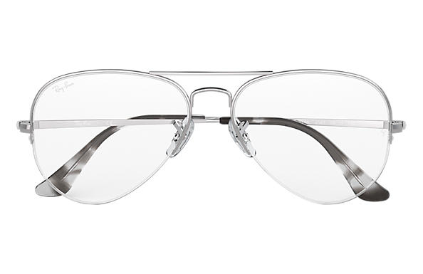

Gafas de ver
El uso de lentes Visual Ups es una manera sencilla de corregir errores de refracción. La mejoría de la visión por medio de lentes ofrece la oportunidad de poder elegir entre diferentes tipos de lentes, diseños de monturas,e incluso revestimientos de lentes para diferentes propósitos.
